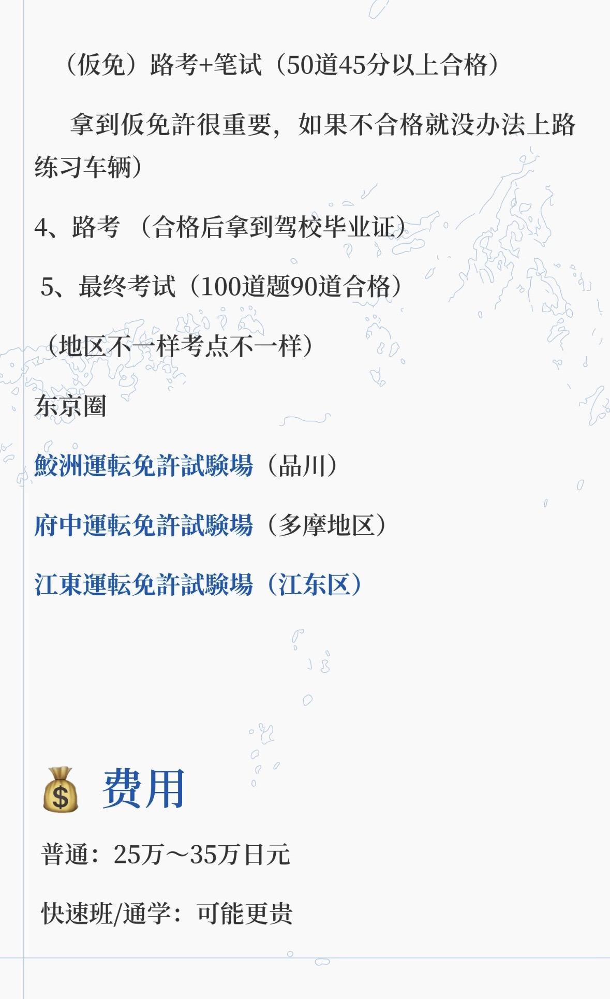
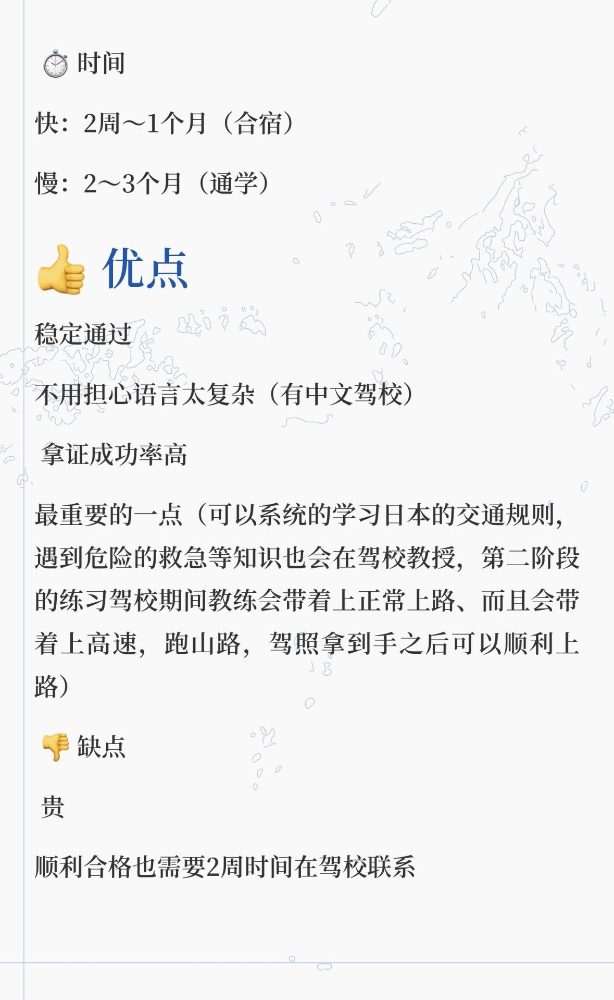
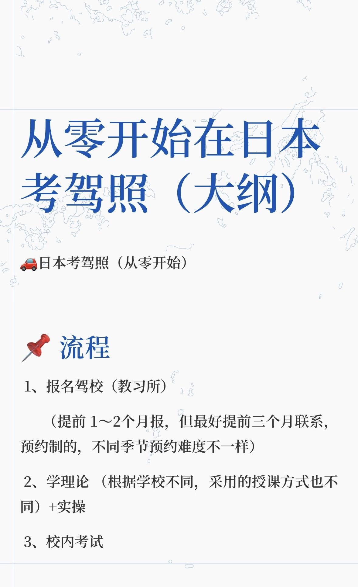

衣 - 购物指南
主要商圈：新宿、涩谷、池袋、原宿
平价购物
| 平价 | 略贵 |
|---|---|
| 池袋 Sunshine City | 伊势丹 |
| 新宿 Lumine | 西武 |
| 涩谷 109 | 小田急 |
| 駅前商店街 |
奢侈品：银座（松屋、三越）
食 - 美食推荐
| 区域 | 特色 | 注意事项 |
|---|---|---|
| 池袋西口北 | 中餐集中区 | 注意甄别卫生条件食材新鲜程度 |
| 高田马场 | 中餐 | 同样需注意甄别卫生条件 |
| 新大久保 | 部分中餐，韩餐最为出名 | 韩餐首选地 |
小红书网红餐厅也很多，需要注意甄别是否为广告。
住 - 家居生活
| 渠道 | 说明 |
|---|---|
| Nitori / IKEA / Amazon | 全新家具首选 |
| 中古 Recycle Shop | 二手家具，冰箱微波炉洗衣机不推荐二手（有概率存在蟑螂） |
| ジモティー | 有免费捡漏机会，但需要辨别对方身份，交易时注意安全 |
行 - 交通出行
日常出行可选择自行车或电车。如需驾车，可以考虑换取或考取日本驾照。
驾照更换（有国内驾照的朋友）
有国内驾照的小伙伴，可以通过"外免切替"直接换日本驾照，不用读 30 多万日元的合宿驾校。
需要准备的材料
- 中国驾照原件
- 驾照日文翻译件（可在日本自动车连盟 JAF 线上申请办理）
- 护照（含全部出入境记录）
- 在留卡
- 住民票（带本籍）
- 证件照片（现场可拍）
- 国内车管所的成绩证明（带公章）
建议全部准备齐再去预约，避免反复跑。
府中驾考中心流程
1
材料审核（需提前预约）- 核查出入境记录、确认驾照取得时间，可能简单提问
2
笔试 - 资料审核通过后当天安排。50 题选择/判断题，答对 45 题以上（90%），约 30 分钟，有中文版本
3
预约路考 - 笔试通过后预约，由于人多通常排到 1-2 个月后
4
路考 - 最容易挂的部分。必须"夸张"安全确认，转弯必须回头确认盲区，打灯提前 3 秒以上
5
拿证 - 路考合格当天下午即可拿证
笔试内容范围（2025年10月更新）
- 日本交通标志识别
- 路权优先规则
- 行人保护原则
- 铁路道口规则
- 酒驾/超速处罚
- 安全确认义务
路考注意：很多人因为"动作太自然"而被判不合格。经费充裕的小伙伴非常建议提前在考场预约练车。经费有限可在网上搜免费路线视频。
费用
| 项目 | 费用 |
|---|---|
| 材料翻译费 | 4,400 日元 |
| 考试费 | 约 5,000 日元（笔试 + 路考） |
| 发证费 | 2,350 日元 |
| 练车费 / 补考 | 另算 |
整体远低于日本驾校 30 万日元费用。顺利情况全程 1-2 个月拿证。
在日本通过合宿考取驾照（无国内驾照）

东京圈驾考中心及费用

合宿驾校优缺点

从零开始在日本考驾照大纲
娱乐推荐
根据自己的兴趣搜寻：
- 二次元 - 秋叶原、中野、池袋乙女路
- 运动 - 各区体育馆、公园跑步
- 健身 - 连锁健身房如 Anytime Fitness
- Live / 追星 - 各类演唱会、Live House
- 小动物 Cafe - 猫咖、兔咖等
实用 App 推荐
积分类
- d point / r point / v point - 和很多商户合作，买东西时可以积分，可以当钱花
- JRE POINT - 电车站直连的商场基本都可以使用
演出票务
- pia / ローチケ / eplus - 爱看各种 Live 或演唱会展子的朋友必备
其他实用类
| 类别 | 推荐 |
|---|---|
| 外卖 | Uber Eats、出前館 |
| 打车 | GO（タクシー） |
| 社交 | LINE（日本版微信） |
| 导航 | Google Maps、Yahoo! 乗換案内 |
| 网购 | Amazon JP、楽天市場 |
| 药妆店 | 各店铺自己的 App 可领优惠券和积分 |
防灾对策
- 区役所会有各种避难防灾小册子可以领取，同时可能会邮寄防灾手册到家里
- 熟记家附近的避难防灾场所（水灾、震灾）
- 池袋有防灾馆，可以申请参观体验
- 百元店有各种防灾用品可以采购
日本是地震多发国家，建议提前了解避难流程，准备应急包。